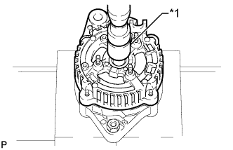
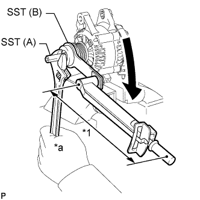

ГЕНЕРАТОР (типа 80 A) > ПОВТОРНАЯ СБОРКА |
| 1. УСТАНОВИТЕ РОТОР ГЕНЕРАТОРА В СБОРЕ |
Вставьте ротор генератора в раму генератора со стороны привода.
Установите шайбу на ротор генератора.
|  |
При помощи торцевой головки 17 мм и пресса медленно запрессуйте крышку со стороны выпрямителя.
| *1 | Торцевая головка на 17 мм |
Заверните 4 гайки.
Установите 3 изолятора контактов в крышку генератора со стороны выпрямителя.
| 2. УСТАНОВИТЕ ДЕРЖАТЕЛЬ ГЕНЕРАТОРА С ДИОДНЫМ МОСТОМ |
Установите держатель держатель генератора с диодным мостом и закрепите его 3 винтами.
| 3. УСТАНОВИТЕ РЕГУЛЯТОР ГЕНЕРАТОРА В СБОРЕ |
Установите регулятор генератора и закрепите его 2 винтами.
| 4. УСТАНОВИТЕ ЩЕТКОДЕРЖАТЕЛЬ ГЕНЕРАТОРА В СБОРЕ |
Установите уплотнительную пластину.
Установите щеткодержатель генератора и закрепите его 3 винтами.
Установите крышку щеткодержателя на щеткодержатель генератора.
Установите изолятор контакта и закрепите его гайкой.
Установите заднюю торцевую крышку генератора и закрепите ее 2 гайками.
Установите пластину диодного моста и закрепите ее гайкой и винтом.
| 5. УСТАНОВИТЕ ШКИВ ГЕНЕРАТОРА С МУФТОЙ |
Временно установите вручную шкив генератора с муфтой на вал ротора генератора.
Закрепите генератор в тисках между алюминиевыми пластинами.
 |
Установите на шкив генератора с муфтой SST (A) и SST (B), как показано на рисунке.
| *1 | Вал ротора |
|  |
Удерживая SST (A) гаечным ключом, поверните SST (B) по часовой стрелке, чтобы закрепить шкив генератора с муфтой.
| *1 | Длина рычага |
| *a | Удерживайте |
 | Поверните |
Снимите SST с генератора.
Убедитесь, что шкив генератора с муфтой вращается плавно.
| 6. УСТАНОВИТЕ КРЫШКУ ШКИВА ГЕНЕРАТОРА |
Установите новую крышку шкива генератора на шкив генератора с муфтой.